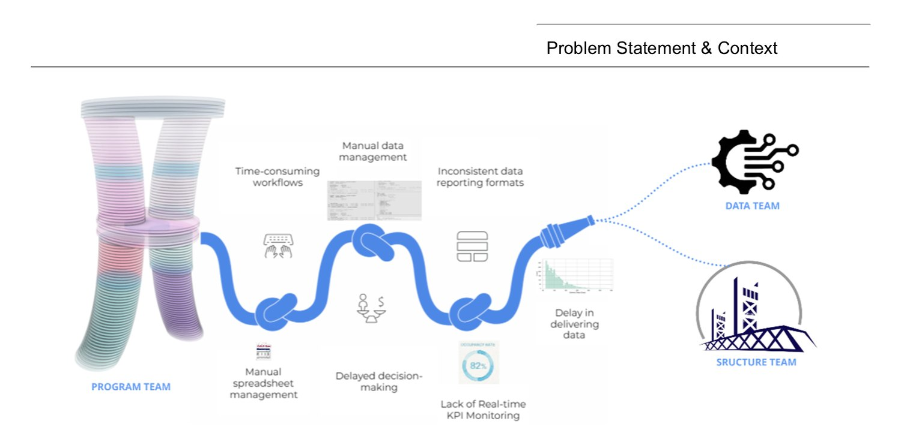
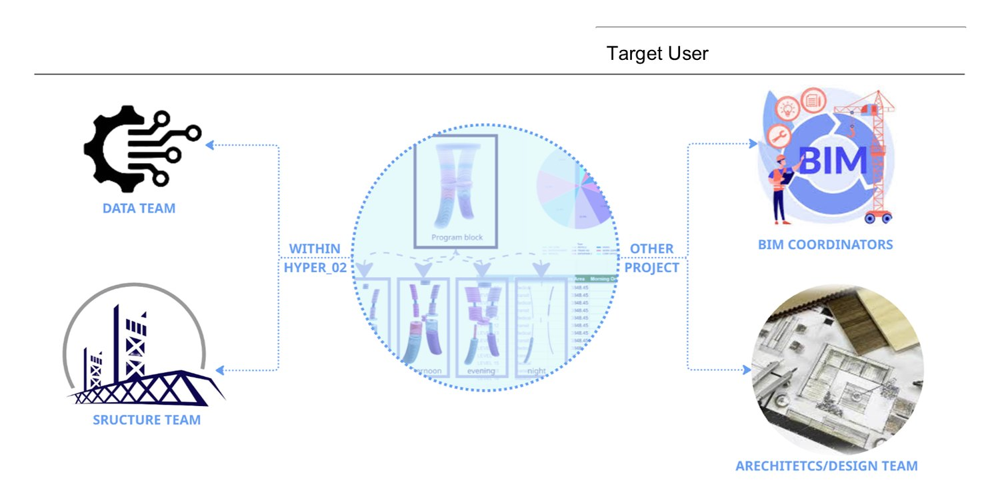
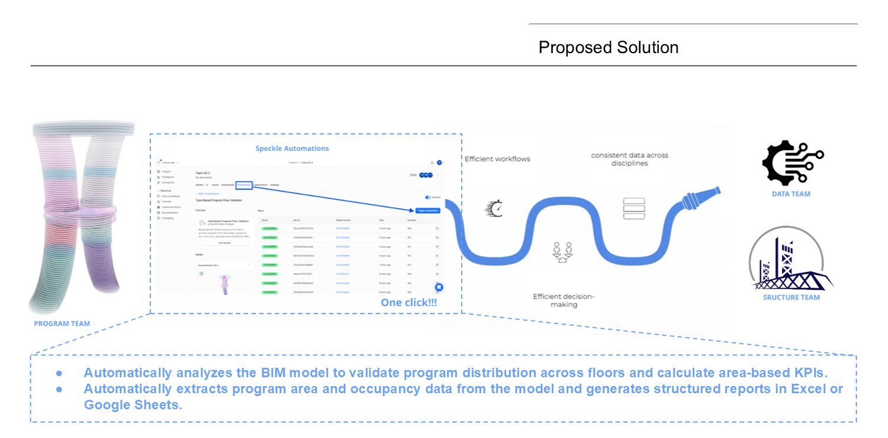
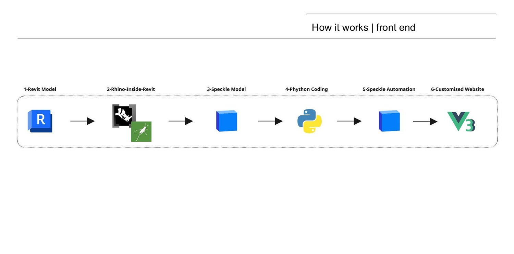
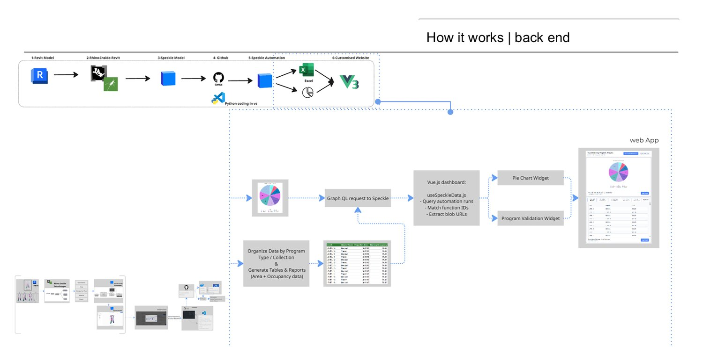
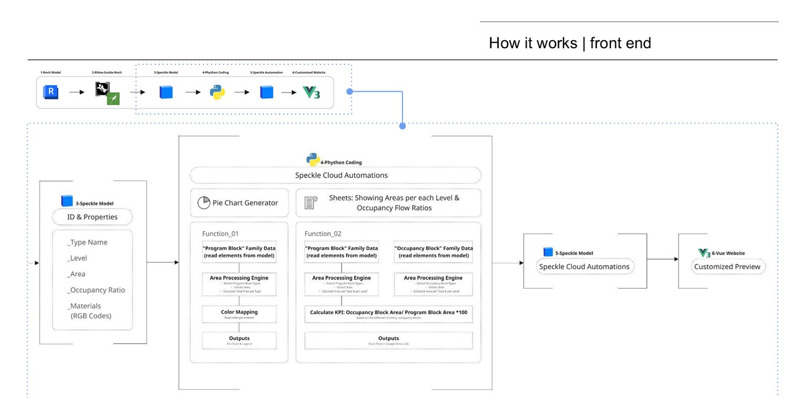
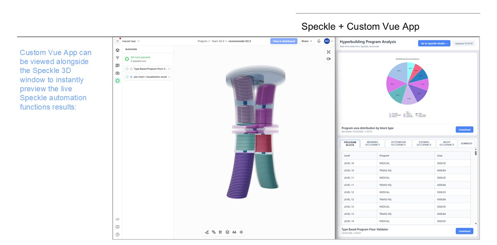
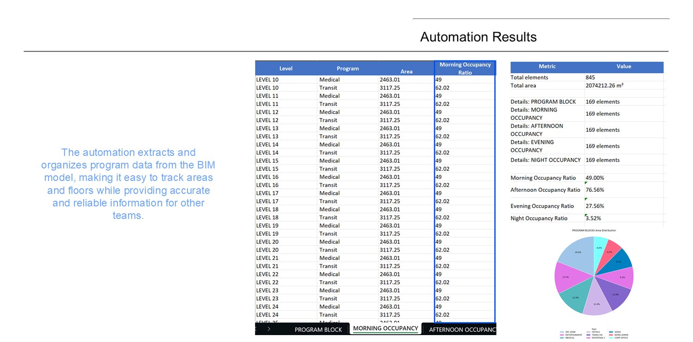
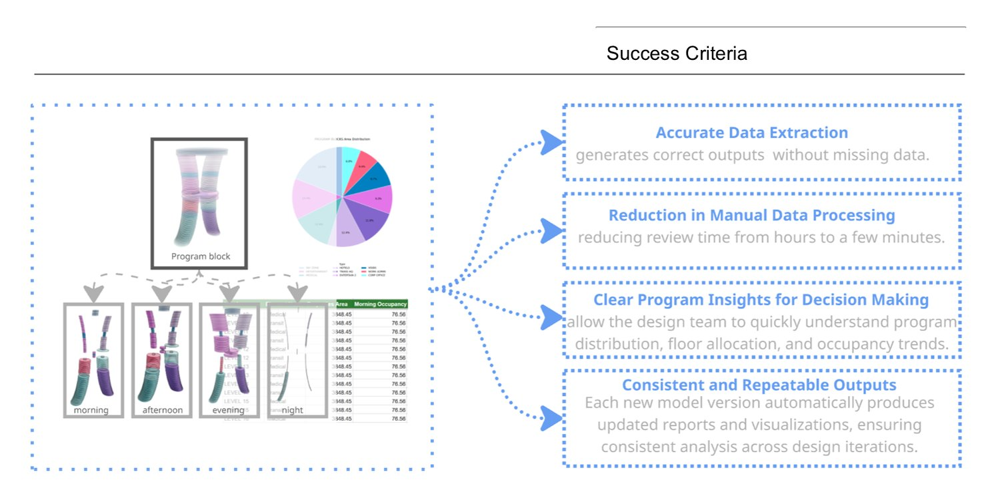

Program Sync
Collaborative WorkflowsA one-click automation that reads a BIM model and validates its program. It extracts area and occupancy data across every floor, computes area-based KPIs, and pushes structured reports straight to Excel or Google Sheets, so coordination stops depending on manual spreadsheets and every team reads from the same live source of truth.
-
One clickmodel in, report out
-
Speckle automationruns on every model update
-
Live dashboardprogram KPIs in a Vue app
Team: Sushmitha Ravi · Nihan Malkoç · Marina Osmolovska · Faculty: Libny Pacheco · Vladimir Ondejcik · Christoph Berkmiller
The Problem
On a live project, program data is scattered: time-consuming manual workflows, spreadsheets maintained by hand, inconsistent reporting formats and delayed decisions, all with no real-time way to monitor whether the model still meets its program.


The Solution
One automation analyses the BIM model to validate program distribution across floors and calculate area-based KPIs, then extracts program area and occupancy data and generates a structured report, in Excel or Google Sheets, at the press of a button.

How It Works
The pipeline chains the tools each team already uses: Revit → Rhino.Inside.Revit → Speckle → Python → Speckle Automation → a custom Vue website. Family blocks and types set the parameters up front; the automation reads them, generates the program blocks and pie-chart breakdowns, and serves the results to the web, front end and back end kept in lockstep.



Speckle + Custom Vue App
The custom Vue app sits alongside the Speckle 3D window, so the live automation results can be previewed the instant the model changes, program areas, floor breakdowns and occupancy, all next to the model they describe.

Automation Results
The output organises program data from the BIM model into clean tables and charts, easy to track areas and floors, and reliable enough for other teams to build on. What used to take hours of manual processing collapses to a few minutes, with consistent, repeatable results on every model version.

